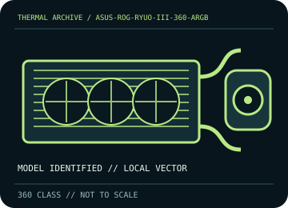

[ INDIVIDUAL COMPONENT // COOLING ]
ASUS ROG Ryuo III 360 ARGB
360 mm AIO with a 30 mm radiator, three 120 mm ARGB fans, and an Anime Matrix pump display.

IDENTIFICATION: Match the complete model, regional SKU, revision, and supplied socket kit. Similar names and radiator classes do not guarantee identical brackets, dimensions, leads, or warranty terms.
Manufacturer specifications and compatibility
| Exact model / listing | ASUS ROG Ryuo III 360 ARGB |
|---|---|
| Radiator dimensions and thickness | 399.5 × 120 × 30 mm aluminum radiator; allow about 55 mm with 25 mm fans, excluding screw heads and fittings. |
| Fans | 3 × 120 × 25 mm fans, up to 2,200 ±300 rpm; PWM/DC speed control, 5 V ARGB lighting. |
| Pump / block | 8th-generation Asetek pump, 800–2,600 ±300 rpm; copper CPU contact plate. |
| Supported CPU sockets | Intel LGA 1851 / 1700 / 1200 / 115x; AMD AM5 / AM4. Follow the Ryuo III-specific bracket sequence. |
| Tube length / construction | 400 mm sleeved rubber tubing. |
| Power, fan, lighting, and display connectors | PWM fan leads, 5 V 3-pin ARGB leads, pump power/control, and the block’s USB connection for Anime Matrix configuration; use only the included/identified cables. |
| Warranty | ASUS advertises a 6-year warranty for this model in supported regions; confirm local product terms, serial, and purchase documentation. |
| Case compatibility | Requires 360 mm radiator support and approximately 55 mm radiator-plus-fan thickness. Check case fit, tube reach, top clearance over RAM/VRM heatsinks, and the pump/block envelope. |
| Motherboard compatibility | LGA/AM socket compatibility depends on the supplied Ryuo III mount. Internal USB 2.0 is required for display configuration; RGB sync requires a 5 V ARGB header/controller, not 12 V RGB. |
Warranty, maintenance, and safe installation
Do not open or refill the sealed loop. Disconnect power for dust removal, hold fans still, and inspect tubes/fittings. If pump noise, leakage, or unexpected thermal rise occurs, stop use and contact ASUS support; use Armoury Crate/display software only as directed.
- Install only with the model-specific manual and included retention hardware. Do not operate a pump dry or allow tubes to kink or rub against sharp edges.
- After installation, verify pump and fan tachometer/control operation and monitor CPU temperature under a repeatable load before normal service.
- Warranty statements are a reference, not a substitute for current regional terms; preserve the serial number and purchase record and contact the manufacturer for service.
Manufacturer sources
- ASUS ROG — ROG Ryuo III 360 ARGB specificationsManufacturer radiator, socket, pump, tube, fan, and display specifications.
- ASUS ROG — Ryuo III 360 ARGB manuals and supportManufacturer model-specific manuals, mounting instructions, and support downloads.
Static catalog reference only. Verify the precise SKU, manual revision, and current local warranty documentation before installation.